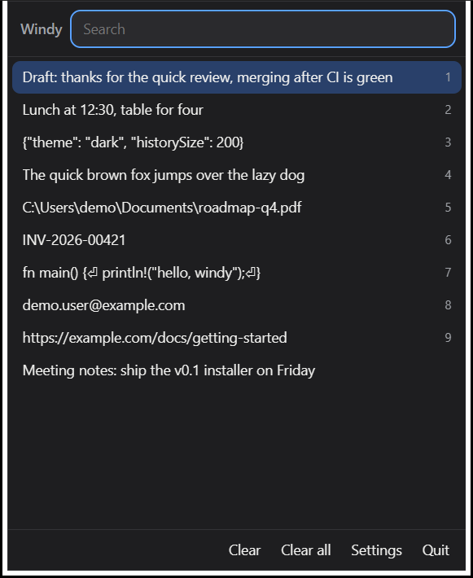
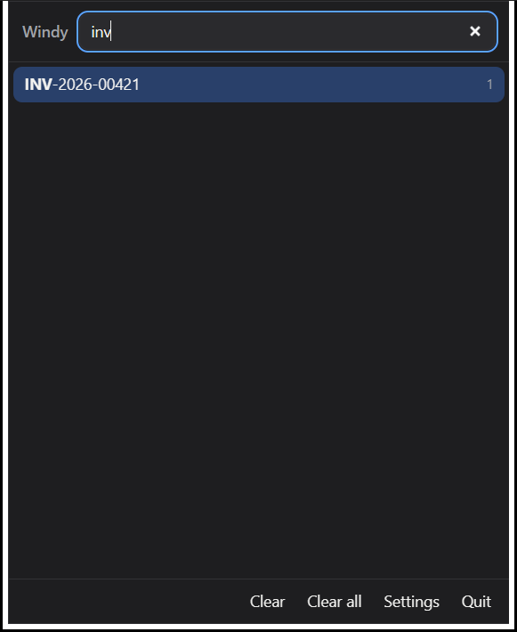
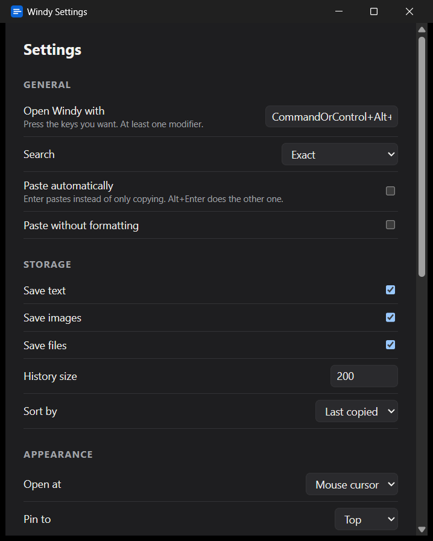
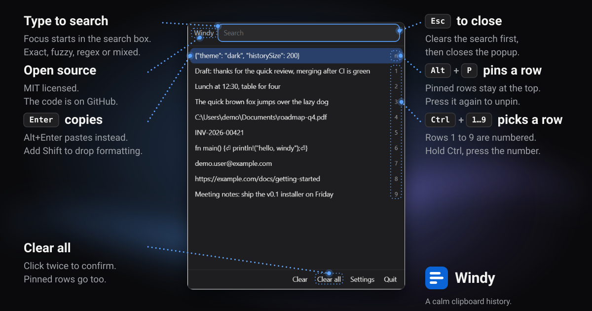

Fast
Opens in about 20 ms on our test machine with an empty history, and searches as you type. Speed with a full history has not been measured yet.
v0.1 · free and open source
Windy is a small, quiet clipboard history. Press a shortcut, search, press Enter. It stays on your device and, by design, never phones home (based on code review).
Free and open source
Live demo. Type to search, ↑ ↓ to move, Enter to copy, Alt+P to pin.
How it works
No windows to manage and nothing to configure first. Windy sits in the tray and waits.
Press Ctrl+Alt+V (Cmd+Alt+V on macOS) or click the tray icon. You can change the shortcut in Settings.
Just start typing. Focus begins in the search box and results filter as you type: exact, fuzzy, regular expression or mixed.
Enter copies the row, Alt+Enter pastes it into the app you came from. Or pick a row with Ctrl+1…9.
Features
Windy does one job. Here is what it does today, and where it stops.
Opens in about 20 ms on our test machine with an empty history, and searches as you type. Speed with a full history has not been measured yet.
Everything is stored locally. On Windows, copies that password managers mark as sensitive are skipped and you can ignore chosen apps. Neither is implemented on macOS or Linux yet.
Exact, fuzzy, regular expression or mixed. Matches are highlighted in the row so you can see why it was found.
Press Alt+P to keep a snippet at the top of the list. Press it again to unpin.
Follows your system's light or dark setting (checked in dark mode only so far). The accent colour is fixed, not taken from your system.
MIT licensed. Inspired by the Mac app Maccy, written independently. Every line is on GitHub.
Screenshots
Real captures of the Windows build, in dark mode.



Keyboard
Windy is meant to be driven from the keyboard.

| Keys | What it does |
|---|---|
| Ctrl+Alt+V | Open Windy (Cmd+Alt+V on macOS) |
| Enter | Copy the selected row |
| Alt+Enter | Paste it into the previous app |
| Alt+Shift+Enter | Paste without formatting |
| Ctrl+1…9 | Pick one of the first nine rows |
| Alt+P | Pin or unpin the row |
| Alt+Backspace | Delete the row |
| Esc | Clear the search, then close |
| Ctrl+, | Open Settings |
Download
Pick your system.
File names never contain a version, so these links always give you the latest release. Checksums are listed on the release page. Early builds are not code-signed.
| Capability | Windows | macOS | Linux |
|---|---|---|---|
| Built and unit-tested in CI | Yes | Yes | Yes |
| Run by hand by the author | Yes | Not yet | Not yet |
| Skips password-manager copies | Yes | Not yet | Not yet |
| Ignore chosen apps | Yes | Not yet | Not yet |
| Ignore by pattern | Yes | Yes | Yes |
| Native Wayland | n/a | n/a | Not yet (X11 and XWayland work) |
FAQ
By design, no. History lives in a local database on your device, and Windy's own code makes no network requests. That is based on code review, not a packet capture, and the system webview that draws the windows is a separate component.
On Windows, Windy skips copies that password managers mark as sensitive, and you can ignore chosen apps in Settings. Both are Windows-only in v0.1 and not yet implemented on macOS or Linux, where a copied password can be recorded. You can also add ignore patterns in Settings.
No. Maccy is a macOS app. Windy follows the same simple behaviour but is a separate project that runs on Windows, macOS and Linux.
Not natively yet. Linux support in v0.1 is X11, including XWayland on Wayland desktops. Native Wayland is a known limitation of this version, so clipboard history, global shortcuts and popup placement on Wayland sessions may not work. The Linux build has not yet been run on real hardware, so treat Linux as unverified. Details are in the project README.
Early builds are not code-signed, so Windows SmartScreen and macOS Gatekeeper warn you. The source and checksums are public so you can verify what you run.
Nothing. It is MIT licensed.
Questions, bugs and ideas are welcome on GitHub Issues. Security reports: see the security policy.